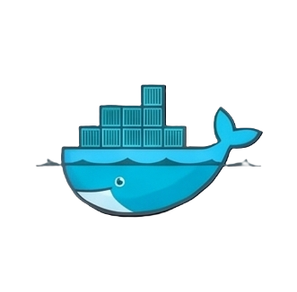

docker run hello-world
Docker packages an app with everything it needs to run — code, libraries, settings — into a portable container. The same container behaves identically on your laptop, a teammate's machine, or a production server. Here's the story, the mechanics, and why it became the default way software ships.

Docker is a platform for packaging an application and everything it depends on into a single unit called a container — then running that container consistently anywhere Docker is installed.
A lightweight, isolated unit that bundles code, runtime, libraries, and settings — built from an "image" and run as a live process.
A read-only blueprint for a container, built layer-by-layer from a Dockerfile and reused across every environment.
The core background service that builds images and runs containers on your machine, accessed via the docker CLI.
A public registry of pre-built images — databases, web servers, languages — ready to pull and run instantly.
Why containers caught on instead of traditional virtual machines:
Containers share the host's operating system kernel instead of each carrying a full copy of one — making them far lighter and faster to start than VMs.
Docker wasn't built to be a product — it was an internal tool that turned out to be more valuable than the company built around it.
Solomon Hykes, Kamel Founadi, and Sébastien Pahl found dotCloud in Paris, a Platform-as-a-Service startup. It joins Y Combinator's Summer 2010 batch and relocates to the Bay Area.
On March 15, 2013, Solomon Hykes demos Docker publicly for the first time, framing the problem as "shipping code to the server is hard." It's open-sourced within weeks, built on Linux containers (LXC).
The company formally renames itself Docker, fully pivoting away from its original hosting business to focus on the container engine everyone wanted instead.
Version 0.9 swaps out LXC for Docker's own Go-based component, libcontainer, removing the external dependency. Microsoft and AWS both announce Docker support this year.
A $95M funding round values Docker at over $1 billion. Docker also donates its container format to found the Open Container Initiative, standardizing containers industry-wide.
Docker splits its open-source components into the Moby project for community R&D, while "Docker" becomes the trademarked commercial product name.
Docker sells its enterprise platform business to Mirantis and refocuses entirely on developer tools — Docker Desktop, Docker Hub, and the core developer workflow.
Docker unifies its subscriptions around Docker Desktop, Hub, Build Cloud, and Scout (vulnerability scanning), while hardened images and AI-assisted workflows become standard parts of the platform.
Docker shows up at nearly every stage of the software lifecycle — not just production.
"Works on my machine" stops being an excuse — every teammate runs the exact same container, regardless of OS.
CI systems spin up a clean container for every test run, then discard it — fast, reproducible, and isolated from other jobs.
The same image tested locally ships straight to AWS, Azure, or a Kubernetes cluster — no rebuilding for "prod."
Each service in a larger app — auth, payments, search — runs in its own container, scaled and updated independently.
Students try a new database or language by pulling an image — no risky installs on the host machine, deleted with one command.
Spin up Postgres, MySQL, or Redis for testing in seconds, then throw the container away — zero local installation mess.
A Dockerfile becomes an image, an image becomes a container, and containers are stored and shared through a registry.
The same four-command loop covers most day-to-day Docker usage.
List the base image, dependencies, and startup command — FROM node:20, COPY . ., CMD ["npm","start"].
Run docker build -t myapp . to turn the Dockerfile into a reusable image, layer by layer.
docker run myapp starts a live, isolated process from that image — instantly, every time.
docker push uploads the image so teammates or servers can docker pull the identical build.
Docker Desktop and Docker Engine are free to use — the paid tiers add team collaboration, security scanning, and commercial-use rights.
Companies with 250+ employees or $10M+ annual revenue are required to use a paid tier for commercial Docker Desktop use. Prices shown are annual-billing rates and change over time — check Docker's official pricing page for current numbers.
Primary sources used for the facts above, plus places to actually learn the tool hands-on.
The free, hands-on walkthrough straight from Docker — build and run your first container.
Structured beginner-to-advanced courses on containers, Compose, and orchestration.
A wide range of project-based courses, including Docker + Kubernetes bootcamps.